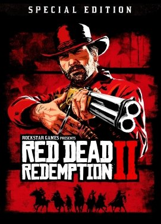
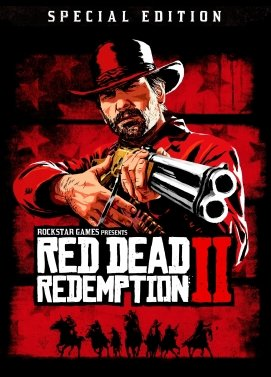
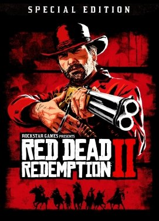

Ainda estamos na metade de 2019, mas o calendário de lançamento de games para 2020 já está bem recheado.
Alguns dos principais e mais aguardados jogos de toda essa geração de consoles têm previsão de lançamento para o ano que vem, incluindo Cyberpunk 2077, Final Fantasy 7 Remake, Halo Infinite, entre outros.
Estamos começando a ter uma ideia de quais serão os grandes lançamentos do segundo semestre de 2019, incluindo pesos-pesados como Star Wars Jedi: Fallen Order, Gears 5 e Borderlands 3. Mas na E3 2019, também vimos uma grande quantidade de títulos sendo anunciados apenas para 2020.
É triste ter que esperar tanto, mas pelo menos teremos alguns jogos muito promissores para jogar no ano que vem. Confira abaixo uma lista com os maiores jogos da E3 2019 que só poderemos jogar em 2020.
Se há uma coisa que consegue deixar o mundo dos games em um caos de ansiedade, é a promessa de alguma novidade incrível. Como não poderia deixar de ser, essas promessas geralmente são acompanhadas por algum trailer espetacular que ajuda a elevar as expectativas dos jogadores. E claro, estamos em 2018, mas já temos algumas belas opções de lançamentos para os próximos anos.
Sabendo disso, resolvemos reunir todas as informações disponíveis para criar uma pequena lista com o nome de alguns jogos que, provavelmente, serão lançados em 2019 ou 2020. Sendo assim, prepare o coração, pois esses games prometem chegar detonando.
Para começarmos essa nossa lista de promessas incríveis, temos o game Anthem, uma aventura que mescla elementos de jogos de ação em terceira pessoa e de alguns RPGs de ação. Em um primeiro momento, o game, que está sendo produzido pela BioWare, está previsto para chegar (no PS4, Xbox One e PC) em fevereiro de 2019.
Pelas primeiras imagens, o game promete combates alucinantes entre os inúmeros freelancers que, fazendo uso de armaduras mecânicas (exosuits), sairão para explorar um mundo imenso e cheio de perigos. Enfim, já deu para perceber que essa lista não está para brincadeira?
Falemos agora de um game que mal foi lançado, mas já virou notícia por inúmeros motivos. Pois é! Death Stranding foi anunciado em 2016, mas sua história já possui alguns capítulos importantes e, por esses motivos, o game ainda não possui uma data de lançamento definida, embora os rumores indiquem que até 2020 essa obra tão intrigante chegará às mãos dos gamers.
De qualquer forma, pelo que foi visto até então, o game abordará um conceito de vida e morte inspirado em diversos temas complexos. Além disso, a presença de atores como Norman Reedus e Mads Mikkelsen, nos vídeos que surgiram nos últimos tempos, ajudou a aumentar o hype.
Continuando com a nossa lista, temos um título que tem lançamento previsto para fevereiro de 2019.
Isto é, o interessante Days Gone. Essa aventura, que será exclusiva para o PS4, já deu algumas belas mostras de que será um game épico.
Desenvolvido pelo mesmo estúdio que deu vida ao clássico Syphon Filter, Days Gone colocará o jogador no controle de um caçador de recompensas controverso, que faz de tudo para viver em um mundo pós-apocalíptico. Aliás, que mundo! Os cenários são incríveis e, ao que tudo indica, o game também será!
Falemos agora da aguardada continuação de uma aventura que já marcou a vida de muitos gamers pelo mundo afora. E claro, por conta da qualidade do seu predecessor, a responsabilidade dos produtores do game The Last of Us Part 2 fica ainda maior. Afinal, será que essa continuação vai conseguir ser tão boa quanto a primeira aventura?
Como o game ainda não tem uma data prevista para o lançamento, teremos que aguardar para responder à questão levantada. No entanto, o estágio da produção está avançado e, pelos trailers lançados, muitas novidades vêm por aí. Assim, provavelmente, num futuro próximo, estaremos aproveitando a segunda parte de uma das melhores aventuras da história recente dos games.
Também com a data de lançamento prevista para fevereiro de 2019, Metro Exodus surge como uma das forças dessa nossa lista. Esse game, classificado como um FPS que mescla elementos do gênero Survivor Horror, traz uma jornada de grandes perigos em um mundo devastado por uma guerra nuclear.
Até onde foi possível vislumbrar (com os trailers lançados), o game parece estar sensacional. Os cenários tem uma beleza assustadora e o gameplay tem uma intensidade que, certamente, irá conquistar os fãs da série Metro novamente.
Os anos vindouros também marcarão a continuidade de algumas séries que marcam presença na história dos games desde o início. Esse é o caso de Doom Eternal, um game que carrega o nome de uma franquia lendária e, até onde foi possível confirmar, irá retomar o “revival” promovido pelo game lançado em 2016.
Nessa aventura, os jogadores assumirão novamente o comando de um dos chamados Doom Slayers. Esses guerreiros têm a missão de enfrentar as forças e monstruosidades vindas diretamente do inferno. Ao que tudo indica, o game será dotado de muita ação e combates eletrizantes.
Sekiro: Shadows Die Twice tem data de lançamento prevista para março de 2019, mas já levantou alguns boatos que apenas serviram para aumentar as expectativas. De acordo com as informações, o jogo será mais difícil do que o lendário Dark Souls (que é uma referência em termos de dificuldade).
Jogos mais Vendido

Videos em Alta
MEC libera R$ 6,1 milhões para garantir continuidade de cursos
Com o objetivo de cumprir o compromisso de expandir a rede de educação técnica, o Ministério da Educação liberou, nesta semana, R$ 6,1 milhões para cursos de formação profissional de trabalhadores no âmbito do Programa Nacional de Acesso ao Ensino Técnico e Emprego (Pronatec). Os recursos devem assegurar que as 4.480 pessoas matriculadas em cursos já em andamento, de cinco estados brasileiros – Amazonas, Tocantins, Paraíba, Rio de Janeiro e Goiás – concluam os estudos. Serão contempladas 52 cidades, totalizando 72 formações.
O diretor de articulação e expansão de educação profissional e tecnológica da Secretaria de Educação Profissional e Tecnológica (Setec) do MEC, Geraldo Andrade de Oliveira, explica que as matrículas ocorreram em junho e o público é formado por desempregados, que ainda estão recebendo o seguro desemprego, e jovens aprendizes. “Essa liberação é importante porque atende prioritariamente a desempregados, de forma que eles consigam uma recolocação profissional, e jovens aprendizes, para que alcancem uma colocação profissional lá na frente”, disse.
Todos os cursos são de formação inicial e continuada, ou seja, de qualificação profissional, e oferecidos na modalidade presencial. Entre eles estão os de assistente administrativo, eletricista industrial, encanador, maquiador, padeiro e recepcionista. O estado contemplado com o maior volume de recursos é o Rio de Janeiro, com R$ 1,8 milhão, seguido de Goiás que vai receber R$ 1,6 milhão, e da Paraíba, com R$ 1,1 milhão. Para Tocantins serão destinados R$ 910 mil e para o Amazonas R$ 512 mil.
“O bolsa-formação é uma ação na qual descentralizamos recursos para promover a ação do Pronatec com recursos diretos do MEC”, completou o diretor. Ainda de acordo com ele, nesta edição participam instituições de ensino estaduais e o repasse será feito diretamente para as secretarias ou autarquias estaduais de educação.
A expansão da rede profissional de educação é tida como uma das prioridades do MEC na atual gestão. A Portaria Nº 38, de 21 de setembro de 2017, que dispõe sobre o repasse de recursos financeiros a instituições de ensino, para a execução da bolsa-formação no âmbito do Pronatec, foi publicada no Diário Oficial da União da última segunda-feira, 2.
 
